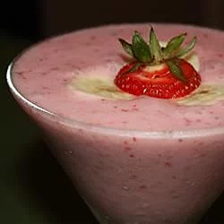

Strawberry Smoothie

Description
You'll love this icy cold strawberry smoothie.
Prep time: 5 minutes. Cook time: 1 minute. Servings: 2.
Ingredients
- 8 strawberries, hulled
- 1/2 cup skim milk
- 1/2 cup plain yogurt
- 3 tablespoons white sugar
- 2 teaspoons vanilla extract
- 6 cubes ice, crushed
Steps
- In a blender combine strawberries, milk, yogurt, sugar and vanilla. Toss in the ice. Blend until smooth and creamy. Pour into glasses and serve.